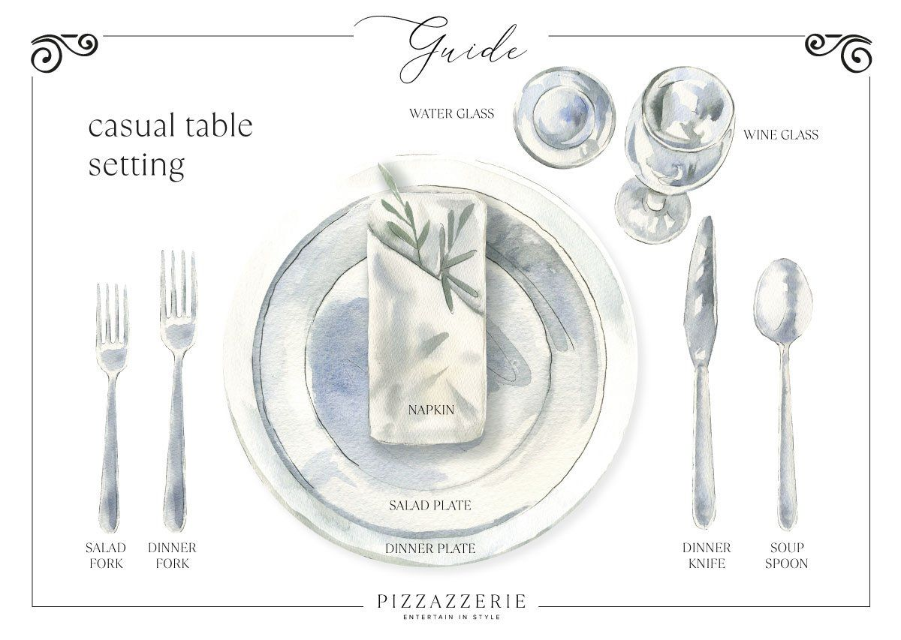
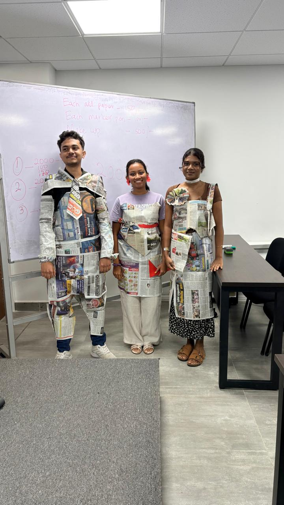
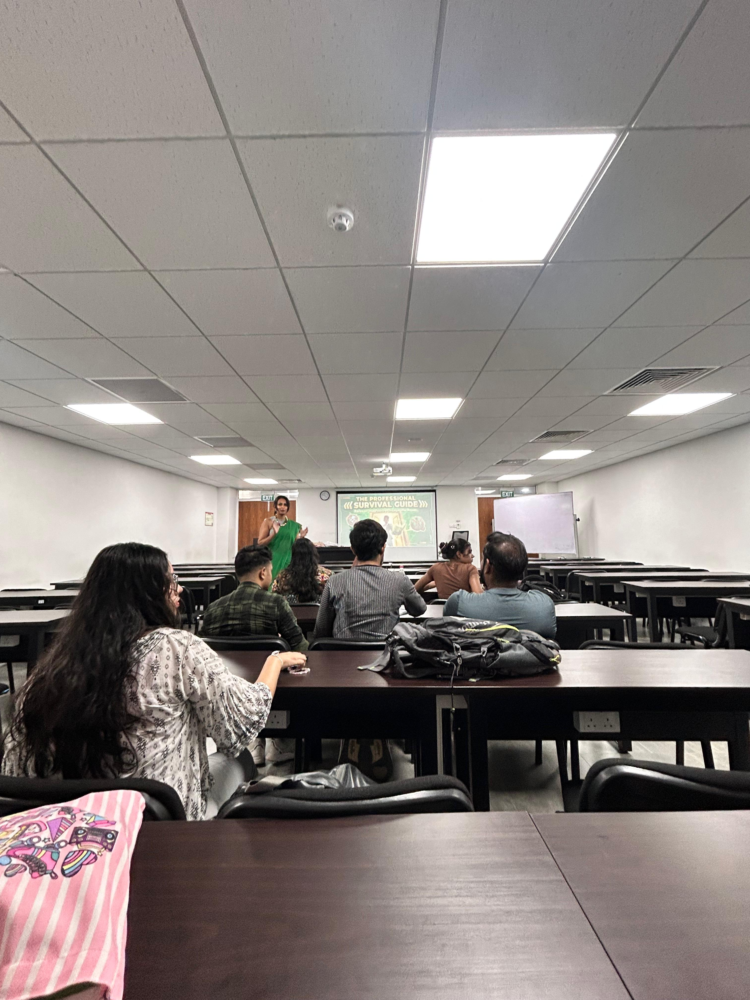
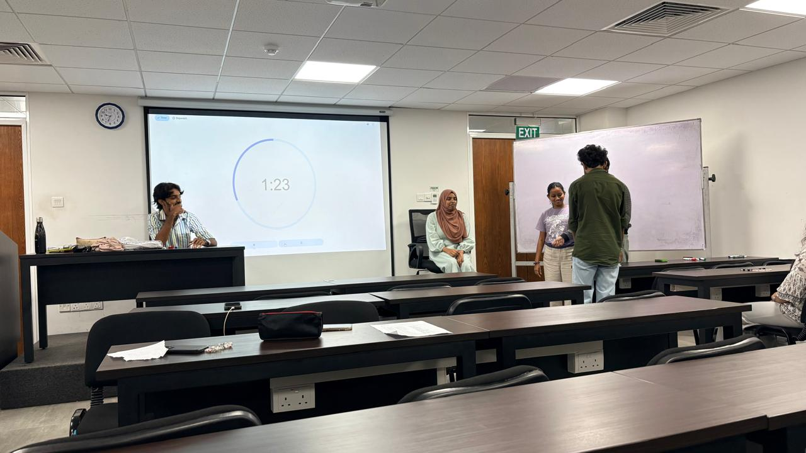
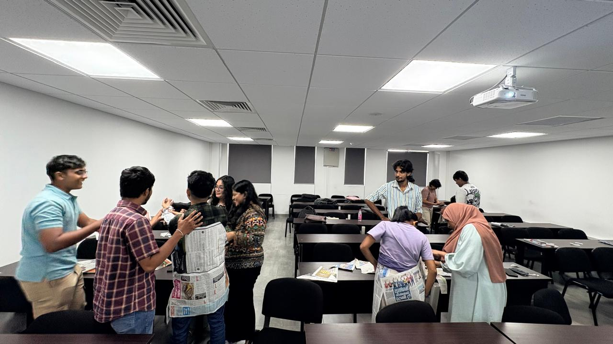
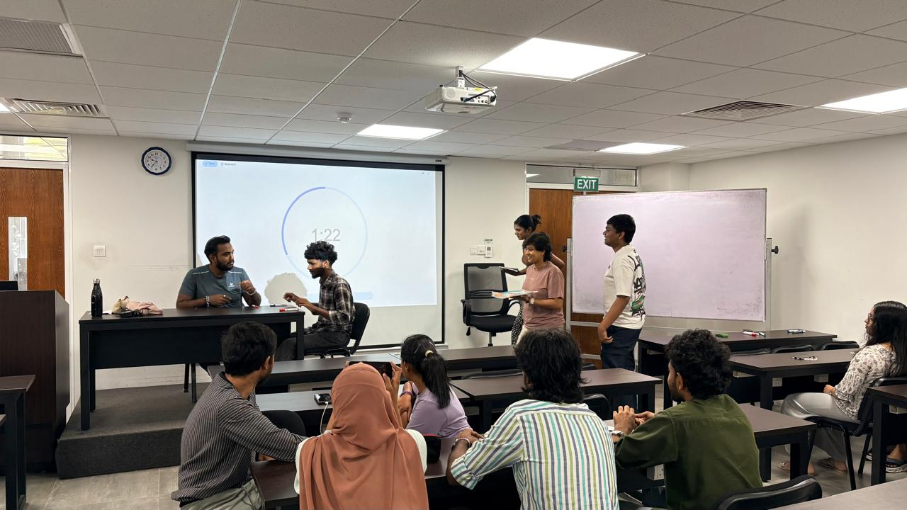
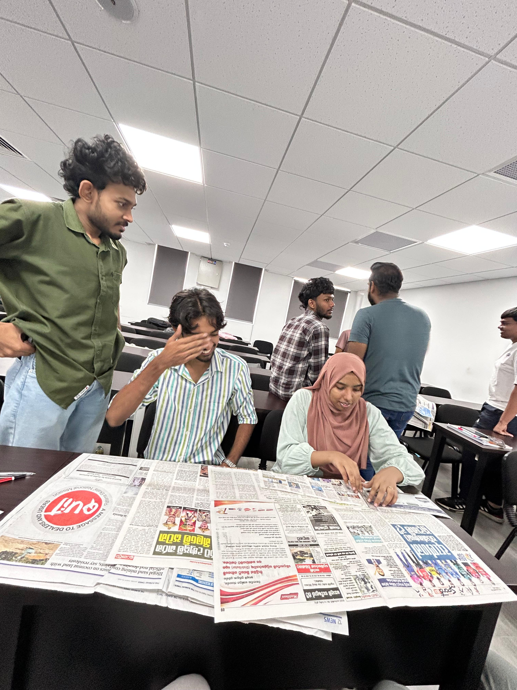
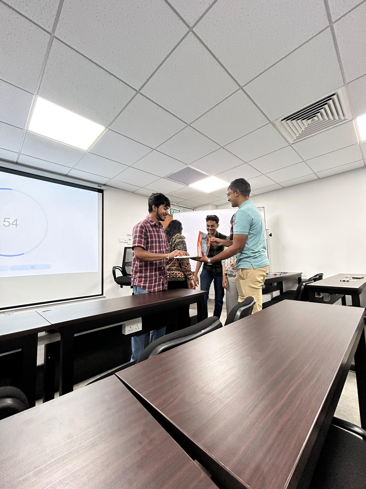

PROFESSIONAL SKILLS / SESSION 10
Dining & Grooming Etiquettes
Professional presentation and etiquette in formal situations.

Overview
Professional presentation and etiquette in formal situations.
Learning outcomes
- Understand professional dining manners.
- Recognize appropriate grooming and dress standards.
- Show respect and good manners in formal situations.
Activities
Public Behaviour Role-Play
Our batch was divided into groups, and each group received a chit describing a situation involving how to behave in a public place. We acted out the assigned situation in front of the class to demonstrate appropriate behaviour.
Newspaper Costume Challenge
For the second activity, each group received another chit with a costume-making task. Our group was asked to create an outfit for the first day at work using newspapers. We worked together to design and make a costume suitable for that occasion.
My reflection
This workshop introduced professional dining manners, grooming standards, and appropriate behaviour in formal situations. I learned the importance of dressing professionally, maintaining good manners, and respecting others. These skills will help me create a positive impression in future professional environments.
Our group and our work



Moments from the workshop











